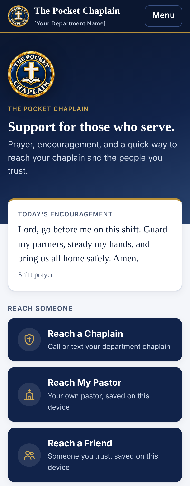
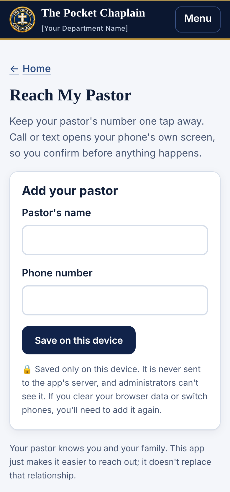
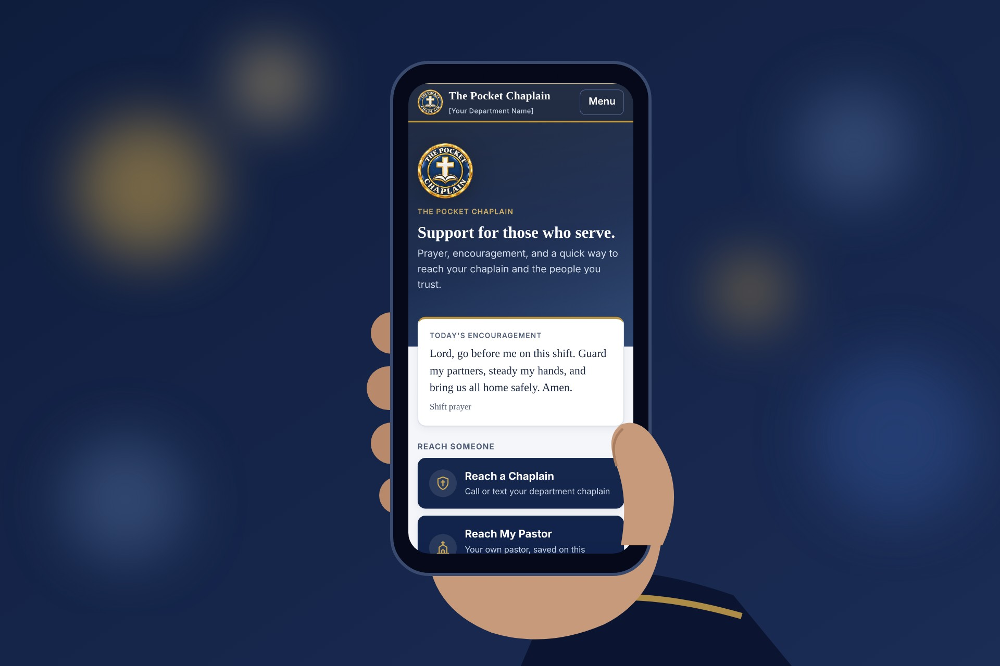
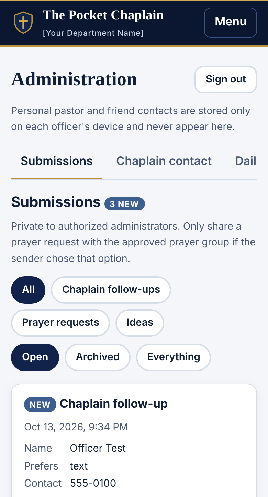

This is the sheriff information package for The Pocket Chaplain, shown as it will print (5 letter-size pages). Highlighted yellow text is a placeholder that will be filled in before it goes out. Please send corrections or suggestions to Pastor Kendrick Meredith at pastorkendrick@yahoo.com.
Prayer, encouragement, and a one-tap way for deputies, staff, and their families to reach a chaplain, a pastor, or a trusted friend.
Three buttons, right on the home screen
What's inside
Try it with your whole office before you commit. No cost, no obligation.


[Date]
Sheriff [Sheriff's Name]
[County Name] County Sheriff's Office
[Street Address]
[City, State ZIP]
Dear Sheriff [Last Name],
Thank you for the work you and your people do for [County Name] County. I'm writing because I have seen, in years of ministry alongside officers, how much your deputies carry home after a shift, and how often they carry it alone. Most of them would never call a hotline. Many would call someone they already trust, if that person were one tap away at the right moment.
That is why I built The Pocket Chaplain. It's a simple app for deputies, staff, and their families. The home screen has three large buttons: Reach a Chaplain, Reach My Pastor, and Reach a Friend. Tapping one opens the phone's own call or text screen, so the person stays in control. Alongside those buttons are short prayers, scripture, and encouragement for hard calls, grief, burnout, and family strain, a one-minute "Take a moment" breathing pause, and a private way to send a prayer request to the chaplain team.
I want to be clear about what it is not. The Pocket Chaplain does not replace your chaplain, a pastor, a friend, counseling, or emergency services. It is not therapy and it is not monitored for emergencies. Its purpose is to extend your chaplain's ministry and make it easier for someone to reach out before a hard week becomes a crisis. I also believe chaplaincy is for everyone, so each person can choose a faith preference, and content for other traditions is added with input from those faith leaders.
Privacy matters to the people you lead, so it shaped the design. A deputy's pastor and friend contacts are saved only on their own phone; neither your administrators nor I can see them. Prayer requests and ideas can be sent anonymously and are seen only by authorized chaplain-team administrators. There are no public profiles or public prayer feeds.
Your office would receive its own copy with your badge, your chaplain's contact information, and your local resources. I'd like to offer a free 90-day pilot for your entire office, families included, so you can see whether it helps your people before making any decision.
I would welcome 20 minutes to show you the app on your phone. Thank you for considering it, and for your service.
Respectfully,
After the call
Deputies see what most people never will, and many carry it quietly. The Pocket Chaplain puts a chaplain, a pastor, and a trusted friend one tap away, so reaching out is as easy as it should be.
A short prayer, a moment to breathe, or a quiet way to ask the chaplain to follow up.
The app doesn't replace your chaplain. It helps your people reach them sooner, by call or text.

Works on the phone they already carry. No app store, no account, and the Reach buttons come first.
1 Ruderman Family Foundation, Study: Police Officers and Firefighters Are More Likely to Die by Suicide than in Line of Duty (2018). 2 Survey of about 100 Fargo (N.D.) Police Department officers by Carol Archbold, North Dakota State University, reported by Stateline, July 28, 2025.
What your people get
No account to create and no menus to dig through. It is not therapy, counseling, or emergency response, and it is not monitored for emergencies.

Call or text your designated chaplain. If no one is listed, a short form asks the chaplain to follow up.
Each person adds their own pastor and a trusted friend. Call or text opens their phone's own screen. Nothing dials or sends by itself.
Your badge, chaplain contacts, and local resources, with The Pocket Chaplain behind it.
Searchable prayers, scripture, and reflections for stress, grief, family, burnout, and recovery after a hard incident.
A one-minute guided breathing pause with an optional prayer.
Anonymous if they wish. They choose: chaplain team only, or an approved prayer group.
Private suggestions for prayers, topics, events, and improvements.
A faith preference kept on the phone. Other traditions are added with their leaders' input.
Chaplain, peer support, grief, counseling, family, and crisis contacts your office keeps up to date.
Proposal for [County Name] County Sheriff's Office
One flat price based on your staff size. Covers every sworn and civilian staff member and their families.
| Agency size | Who's covered | Per year |
|---|---|---|
| Up to 50 staff | All staff and their families | $600 |
| 51 – 150 staff | All staff and their families | $1,200 |
| 151 – 500 staff | All staff and their families | $2,500 |
| More than 500 staff | All staff and their families | Custom quote |
Deputies whose agency doesn't have a license can subscribe on their own at thepocketchaplain.com:
$2.99 per month, or $24.99 per year, with a 14-day free trial.